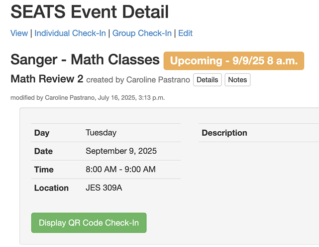

I. SEATS Introduction
SEATS is a web app used by UT's Sanger Learning Center for supplemental education and tutoring. Its features can be broken down into three main categories:
Creating and editing events

Users can create events for themselves or for others and edit preexisting events.
Searching for events
Users can search for events using specific parameters, and can download data from these searches in order to perform analytics.
Taking event attendance
Users can record event attendance by checking in students with their UT EIDs.